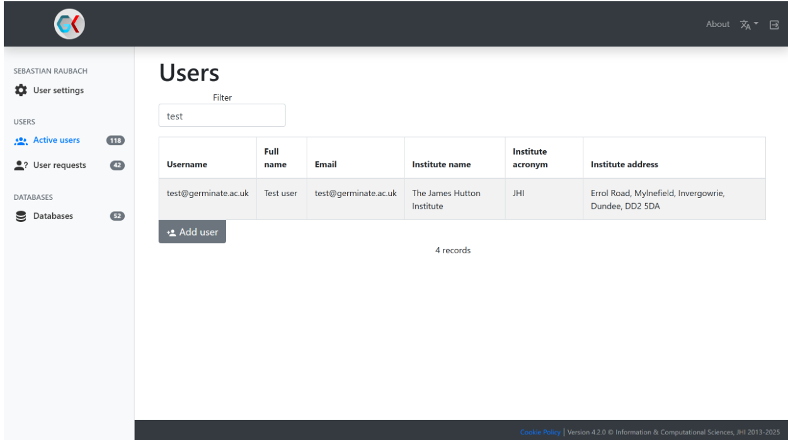
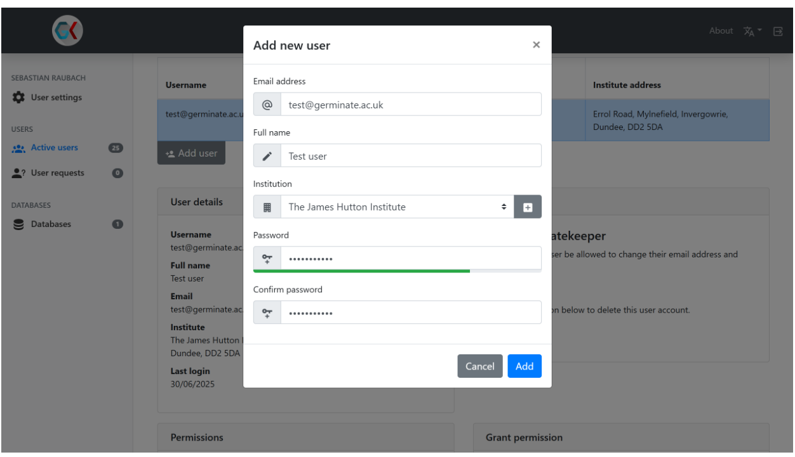
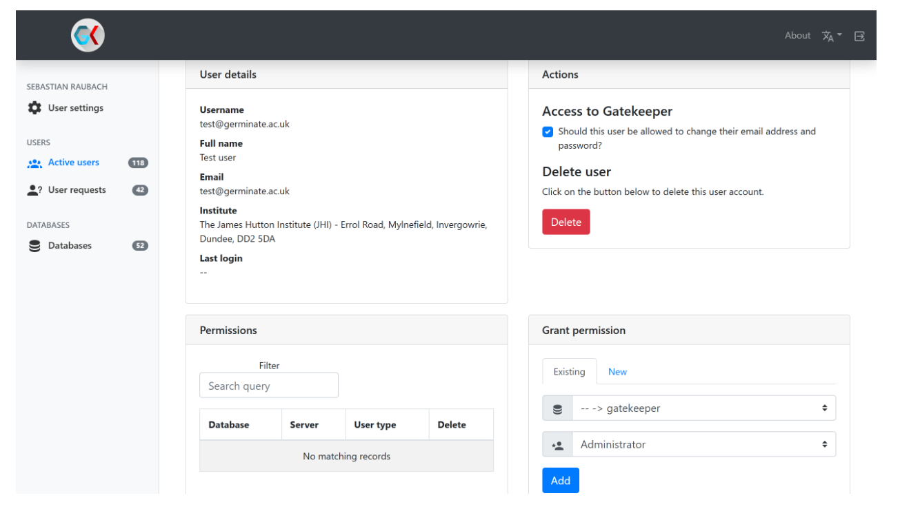

graph LR A[Data Entry] --> B[FAIR Storage in Germinate] B --> C[Web-Based Exploration] C --> D[Export for Analysis] D --> E[Reproducible Research]
Tools
1 Introduction to Germinate
Germinate is an open-source, web-based data management platform developed to address the challenges of handling large, complex biological datasets. Traditional tools like spreadsheets fall short in managing modern volumes of genetic, phenotypic, and environmental data. Germinate bridges this gap by offering a standardized, FAIR-compliant (Findable, Accessible, Interoperable, Reusable) framework for curating, exploring, and sharing multidisciplinary research data. It serves as a centralized hub for genetic resources, enabling reproducible analysis and collaborative science across global research communities.
2 Complete Definition of Germinate
Germinate is a digital curation platform designed to manage, visualize, and disseminate large-scale biological data. Its core functionalities include:
2.1 Purpose & Scope
Problem Solved: Overcomes limitations of spreadsheets in handling complex, high-volume datasets (e.g., millions of genetic markers or phenotypic data points).
Mission: To standardize and democratize access to genetic resource data while ensuring FAIR compliance.
2.2 Data Types Supported
Germinate stores and integrates:
| Data Category | Examples |
|---|---|
| Passport Data | Germplasm identifiers, origins, collection details |
| Phenotypic Data | Trait measurements, growth characteristics |
| Genetic Data | SNP markers, haplotypes, genotypic profiles |
| Field Trial & Pedigree | Breeding history, lineage relationships |
| Climatic & Geographic | Environmental variables, GPS coordinates |
| Multimedia & Annotations | User-submitted images, notes, metadata |
Note: Continuously expanded (e.g., UAV/drone phenotyping in development).
2.3 Technical Framework
- Development: Created and maintained by the James Hutton Institute (Scotland) since 2005.
Standards Compliance:
FAO Multi-Crop Passport Descriptors (MCPD).
Dublin Core metadata.
MIAPPE (in development).
FAIR data principles.
Export Flexibility:
Formats: Plain text, Flapjack (genotyping), Helium (pedigree), HapMap.
Philosophy: “Any data entered can be extracted efficiently.”
2.4 Accessibility & Security
Deployment:
Free installation via GitHub or Docker (supports Raspberry Pi).
Public demo databases for testing.
User Management:
Role-based access (public vs. password-protected databases).
GDPR-compliant privacy (emails used only for password recovery).
Secure password encryption (no plaintext storage).
2.5 Scientific Impact
Scalability: Manages databases with “hundreds of thousands of plant lines and millions of data points.”
Global Reach: Originally focused on barley/potato; now supports 25+ crops worldwide.
Collaboration: Enables data sharing across institutions while maintaining reproducibility.
2.6 Key Workflow Integration
2.7 GateKeeper
Gatekeeper is Germinate’s user management tool. It handles user registration, authentication and management and sits alongside multiple instances of Germinate.
3 Configurations
3.1 Germinate
You can run Germinate in a variety of ways.
The Germinate Docker container is most likely the greatest choice if you are knowledgeable about Docker and containerisation. Assuming you already have a functional Docker environment, it requires the least amount of configuration. A manual build of Germinate will probably be your best bet if Docker is a foreign concept to you.
The next section will walk you through both situations and outline every step you need to take to get Germinate operational.
3.1.1 Docker Setup
Let’s begin with Docker, which is a simpler case. You can just pull and run our functional Docker image of Germinate on your computer or server by using DockerHub.
You will also require a MySQL database. This could be an existing database server or another Docker container. A Docker MySQL container is used in the examples that follow. Simply extract the pertinent sections from the docker file or docker commands if you want to use your own database.
It is as easy as defining this docker-compose.yml file if you have docker-compose installed. Modify only the sections with comments above them.
services:
mail:
image: bytemark/smtp
restart: always
container_name: mail
mysql:
image: mysql:${MYSQL_VERSION:-8.4.5}
ports:
- 9306:3306
volumes:
- mysql:/var/lib/mysql
- ./init.sql:/docker-entrypoint-initdb.d/init.sql
environment:
# The root password. This is not used by Germinate, but can be used to access the database externally
MYSQL_ROOT_PASSWORD: PASSWORD_HERE
# The name of the Germinate database, e.g. "germinate"
MYSQL_DATABASE: GERMINATE_DATABASE_NAME
# The username Germinate will use to connect to this database
MYSQL_USER: DATABASE_USER
# The password Germinate will use to connect to this database
MYSQL_PASSWORD: DATABASE_PASSWORD
restart: always
container_name: mysql
gatekeeper:
image: ${GATEKEEPER_IMAGE:-cropgeeks/gatekeeper}:${GATEKEEPER_VERSION:-release-4.8.6}
environment:
- JAVA_OPTS:-Xmx512m
volumes:
- type: bind
source: ./config/gatekeeper
target: /data/gatekeeper
- type: volume
source: gatekeeper
target: /usr/local/tomcat/temp
restart: always
container_name: gatekeeper
depends_on:
- mysql
- mail
germinate:
image: ${GERMINATE_IMAGE:-cropgeeks/germinate}:${GERMINATE_VERSION:-release-<version>}
environment:
- JAVA_OPTS:-Xmx512m
# old java -Xmx4g
volumes:
- type: bind
# This points to where your Germinate configuration folder is outside the container
source: ./config/germinate
target: /data/germinate
- type: volume
source: germinate
target: /usr/local/tomcat/temp
restart: always
container_name: germinate
depends_on:
- mysql
plausible_db:
image: postgres:16-alpine
restart: always
volumes:
- db-data:/var/lib/postgresql/data
environment:
- POSTGRES_PASSWORD=postgres
healthcheck:
test: ["CMD-SHELL", "pg_isready -U postgres"]
start_period: 1m
container_name: postgres
plausible_events_db:
image: clickhouse/clickhouse-server:24.3.3.102-alpine
restart: always
volumes:
- event-data:/var/lib/clickhouse
- event-logs:/var/log/clickhouse-server
- ./clickhouse/logs.xml:/etc/clickhouse-server/config.d/logs.xml:ro
- ./clickhouse/ipv4-only.xml:/etc/clickhouse-server/config.d/ipv4-only.xml:ro
- ./clickhouse/low-resources.xml:/etc/clickhouse-server/config.d/low-resources.xml:ro
ulimits:
nofile:
soft: 262144
hard: 262144
healthcheck:
test: ["CMD-SHELL", "wget --no-verbose --tries=1 -O - http://127.0.0.1:8123/ping || exit 1"]
start_period: 1m
container_name: plausible_events
plausible:
image: ghcr.io/plausible/community-edition:v2.1.4
restart: always
ports:
- 127.0.0.1:8000:8000
command: sh -c "/entrypoint.sh db createdb && /entrypoint.sh db migrate && /entrypoint.sh run"
depends_on:
plausible_db:
condition: service_healthy
plausible_events_db:
condition: service_healthy
mail:
condition: service_started
volumes:
- plausible-data:/var/lib/plausible
ulimits:
nofile:
soft: 65535
hard: 65535
environment:
- TMPDIR=/var/lib/plausible/tmp
- BASE_URL=http://localhost:8000
- SECRET_KEY_BASE=ypUt8oZXf+ntrG0AXyZgDkfp2ekKDOmb9a5JNrmH9+6ccwMJkrBoknMbFVmLG28e0+Jga0aGK6v+RufDzFsKYA==
- SMTP_HOST_ADDR=mail
- SMTP_HOST_PORT=25
container_name: plausible
#phpmyadmin 80
phpmyadmin:
image: phpmyadmin:${PHPMYADMIN_VERSION:-<version>}
restart: always
ports:
- ${PHPMYADMIN_PORT:-9300}:80
container_name: phpmyadmin
environment:
PMA_HOST: mysql
depends_on:
- mysql
# reverse-proxy
nginx:
image: nginx:${NGINX_VERSION:-<version>}
restart: always
container_name: nginx-proxy
ports:
- ${NGINX_EXTERNAL_PORT:-9090}:${NGINX_LISTENING_PORT:-80}
volumes:
- ./reverse-proxy/nginx.conf:/etc/nginx/nginx.conf
- ./reverse-proxy/certs:/etc/nginx/certs
depends_on:
- germinate
- gatekeeper
volumes:
mysql:
germinate:
gatekeeper:
mail:
db-data:
event-data:
event-logs:
plausible-data:
phpmyadmin:
nginx:
networks:
default:
name: ${NETWORK:-cousin-net}
Verify that the location at /path/to/your/germinate/config contains at least one config.properties file.
Note: The database.server property in the config.properties file should be set to mysql when using the above setup since this is the address of the database within the Docker network. Kindly use the new name if you decide to rename the MySQL service.
3.1.2 Possible Setup Diagram

The figure above shows Germinate (and Gatekeeper) using an externally provided MySQL server while they run as two Docker images in a Docker compose
This Docker compose setup dictates some of the properties in the config.properties files of Germinate and Gatekeeper respectively.
For Germinate it’ll look like this:
# This is the Germinate MySQL Docker container name
database.server=germinate_mysql
database.name=germinate
database.username=germinate-username
database.password=germinate-password
# Note, we're not using the 9306 port here. That's only for remote access.
database.port=3306
# We're using the Docker container name of Gatekeeper here.
gatekeeper.url=http://gatekeeper:8080
gatekeeper.username=gatekeeper-username@email.com
gatekeeper.password=gatekeeper-password
# This is only true if trying to access it from the machine running Docker.
# If you want the setup to be available from the outside world, use whatever your Proxy setup is configured as.
germinate.client.url=http://localhost:9080
# This just tells Germinate where to find this config file from inside the Docker container
data.directory.external=/data/germinate
authentication.mode=SELECTIVE
# This is only true if trying to access it from the machine running Docker.
# If you want the setup to be available from the outside world, use whatever your Proxy setup is configured as.
germinate.client.url=http://localhost:9090/
# This just tells Germinate where to find this config file from inside the Docker container
data.directory.external=/data/germinate
authentication.mode=SELECTIVE
brapi.enabled = false
files.delete.after.hours.async = 12
files.delete.after.hours.temp = 12
gatekeeper.registration.requires.approval = true
pdci.enabled = true
colors.charts = #00a0f1,#5ec418,#910080,#222183,#ff7c00,#c5e000,#c83831,#ff007a,#fff600
colors.template = #FF9E15,#799900,#00748C,#853175,#555559,#FFD100,#C2002F,#CF009E,#6AA2B8,#D6C200
colors.gradient = #440154,#48186a,#472d7b,#424086,#3b528b,#33638d,#2c728e,#26828e,#21918c,#1fa088,#28ae80,#3fbc73,#5ec962,#84d44b,#addc30,#d8e219,#fde725
color.primary = #20a8d8
dashboard.categories = germplasm,markers,traits,locations
dashboard.sections = publications,news,projects,dataupdates,datastories
hidden.pages =
hidden.pages.autodiscover = false
gatekeeper.registration.enabled = false
gdpr.notification.enabled = false
plausible.hash.mode = true
plausible.api.host = https://plausible.io
comments.enabled = true
data.import.mode = IMPORT
gridscore.url = https://gridscore.hutton.ac.uk
helium.url = https://helium.hutton.ac.uk/
fieldhub.url = https://ics.hutton.ac.uk/fieldhub/
hidden.columns.germplasm = entityParentName,entityParentGeneralIdentifier,institutionId,institutionName,latitude,longitude,collDate
hidden.columns.germplasm.attributes =
hidden.columns.images =
hidden.columns.climates =
hidden.columns.climate.data = climateId
hidden.columns.comments = commentForeignId,commentTypeId
hidden.columns.fileresources = fileresourcetypeId
hidden.columns.maps =
hidden.columns.markers =
hidden.columns.map.definitions =
hidden.columns.datasets = experimentId
hidden.columns.dataset.attributes =
hidden.columns.experiments =
hidden.columns.entities =
hidden.columns.groups = userId
hidden.columns.institutions =
hidden.columns.locations =
hidden.columns.pedigrees =
hidden.columns.traits =
hidden.columns.trials.data = traitId
hidden.columns.collaborators =
hidden.columns.publications =
3.2 Gatekeeper
This part describes the content of Gatekeeper’s configuration folder. This folder does not exist and has to be created somewhere on the system where Gatekeeper can access it. The folder only has to contain a single file: config.properties
The content of this file is explained below. This includes properties like the database details and user credentials as well as various customization options. The configuration should look ike this:
# This is the Gatekeeper MySQL Docker container name
database.server=gatekeeper_mysql
database.name=gatekeeper
database.username=gatekeeper-username
database.password=gatekeeper-password
# Note, we're not using the 9307 port here. That's only for remote access.
database.port=3306
# Replace these with actual email properties
email.address=dummyemail@gmail.com
email.username=dummyemail@gmail.com
email.password=mysimplepassword
email.server=smtp.gmail.com
email.port=25
# This is only true if trying to access it from the machine running Docker.
# If you want the setup to be available from the outside world, use whatever your Proxy setup is configured as.
web.base=http://localhost:9081/3.2.1 Default Admin account
When you run Gatekeeper for the first time, a default admin account is created. The default password for this account is simply “password”. Please change this immediately by logging in using the username “admin” and the aforementioned password.
Once running, you will need to create a new user in Gatekeeper that Germinate can use to authenticate itself. To this end, create a new user with Administrator permissions for the default Gatekeeper (not Germinate) database. You can then use the username and password of this new account in the Germinate configuration by providing: gatekeeper.username and gatekeeper.password.
3.2.2 Gatekeeper: Adding Users
In the context of Gatekeeper, users fall into two categories:
Type 1 – Individual Users
A genuine person who wants to access Germinate data.
These users log into Germinate with their email and password. Germinate then communicates with Gatekeeper to verify their access rights.Type 2 – System Users
A specific instance of Germinate trying to access the Gatekeeper database.
There should be one such user per Germinate instance. This user is configured using thegatekeeper.usernameandgatekeeper.passwordproperties in theconfig.propertiesfile of Germinate. This setup is typically done once during system deployment.
3.2.3 Managing Type 1 Users (Individuals)
To add or manage individual users:
- Log in as an administrator in Gatekeeper.
- From the side menu, select “Active users”.
- A table appears showing all users currently registered in Gatekeeper.
- Use the search bar to filter and locate specific users.
To add a new user:
- Click the “Add user” button below the table.

- A new window opens asking for:
- Full Name
- Institution (use the “+” button to add a new one if needed)
- Email Address
- Password (and confirmation)

Once added, the user will appear at the bottom of the table.
3.2.4 Managing User Details and Permissions
When you select a user from the table, additional information appears below:
- User Information
- Full name
- Email address
- Institution
- Full name
- Account Settings
- Option to allow password reset via Gatekeeper login
- Option to delete the user
- Option to allow password reset via Gatekeeper login
- System Permissions
- Displays access rights per system (e.g., Germinate instance)
- Use the dropdown to change access level or delete permission
- Displays access rights per system (e.g., Germinate instance)
- Add New Permissions
- Choose a system (Germinate or Gatekeeper)
- Select permission level
- Click “Add” to assign permissions
- Choose a system (Germinate or Gatekeeper)

✅ Gatekeeper ensures secure, role-based access control across Germinate instances. Managing users properly guarantees both data security and user autonomy.